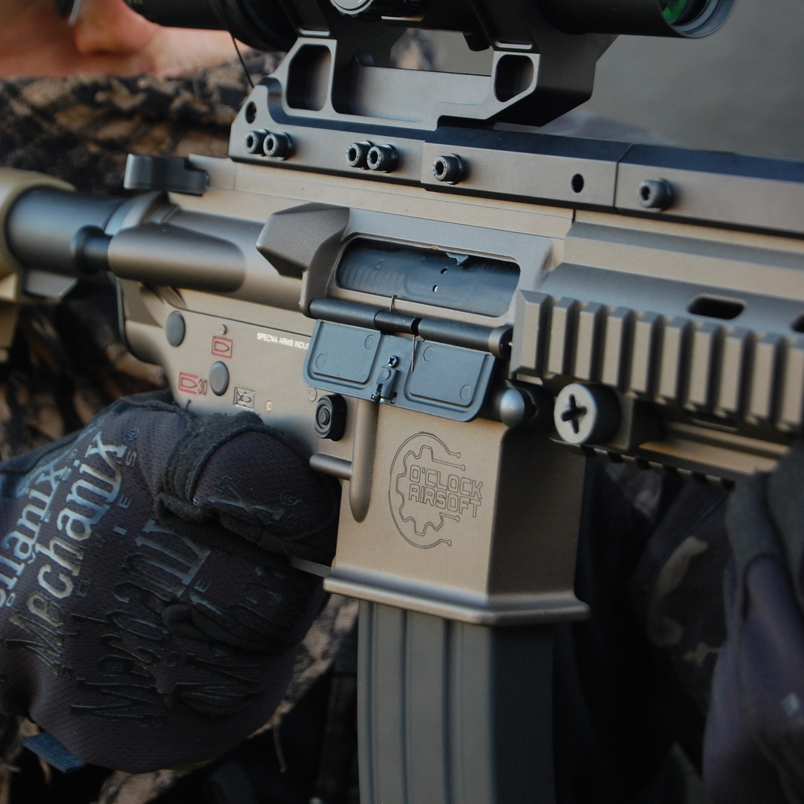
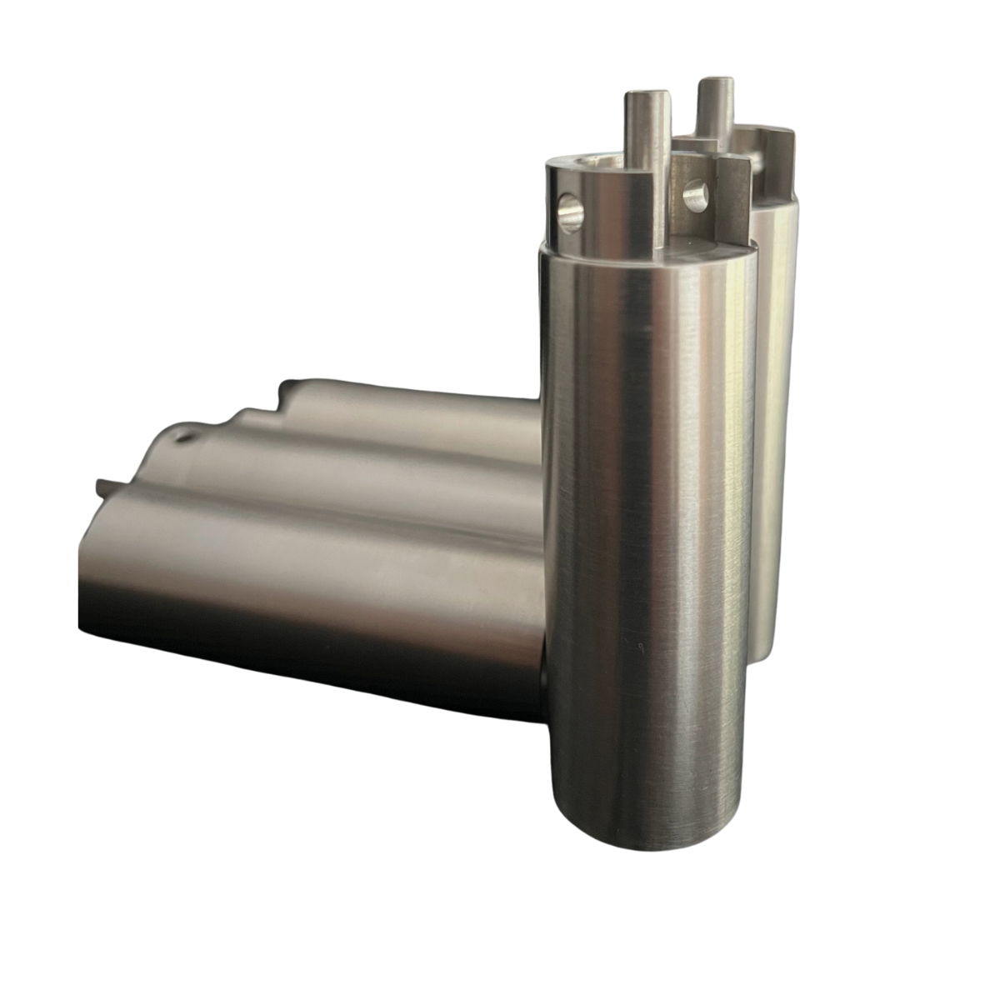
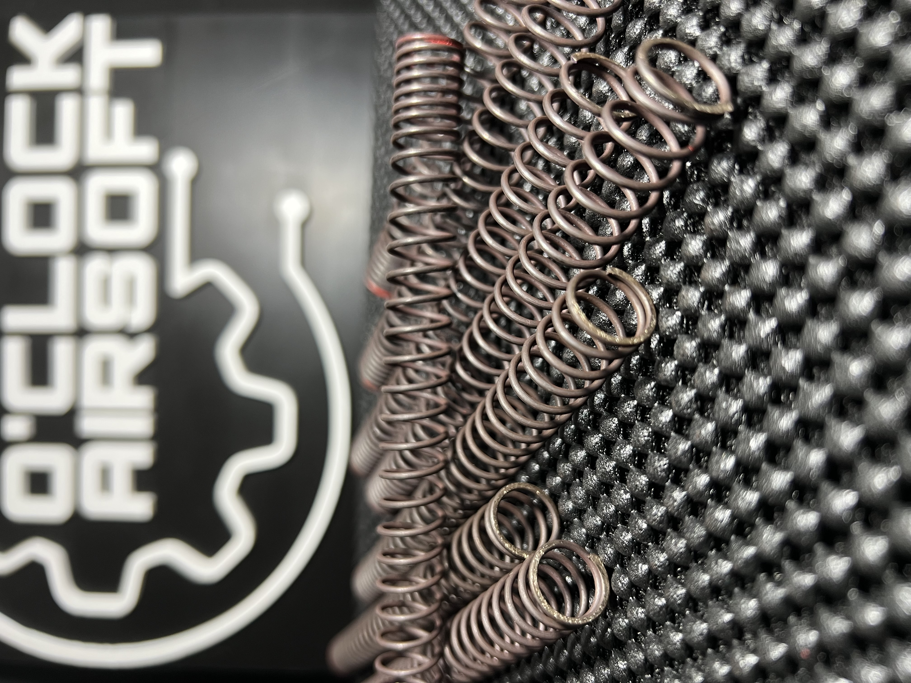
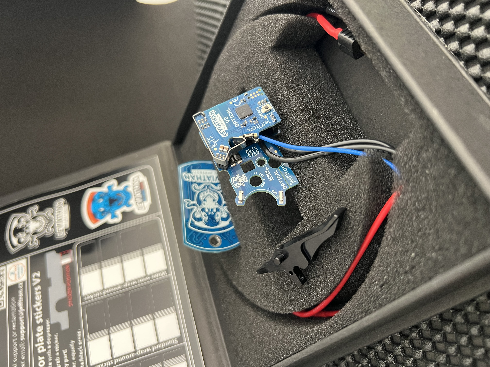
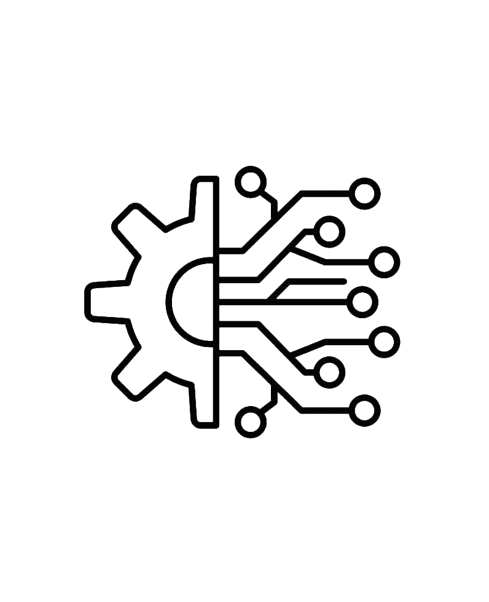
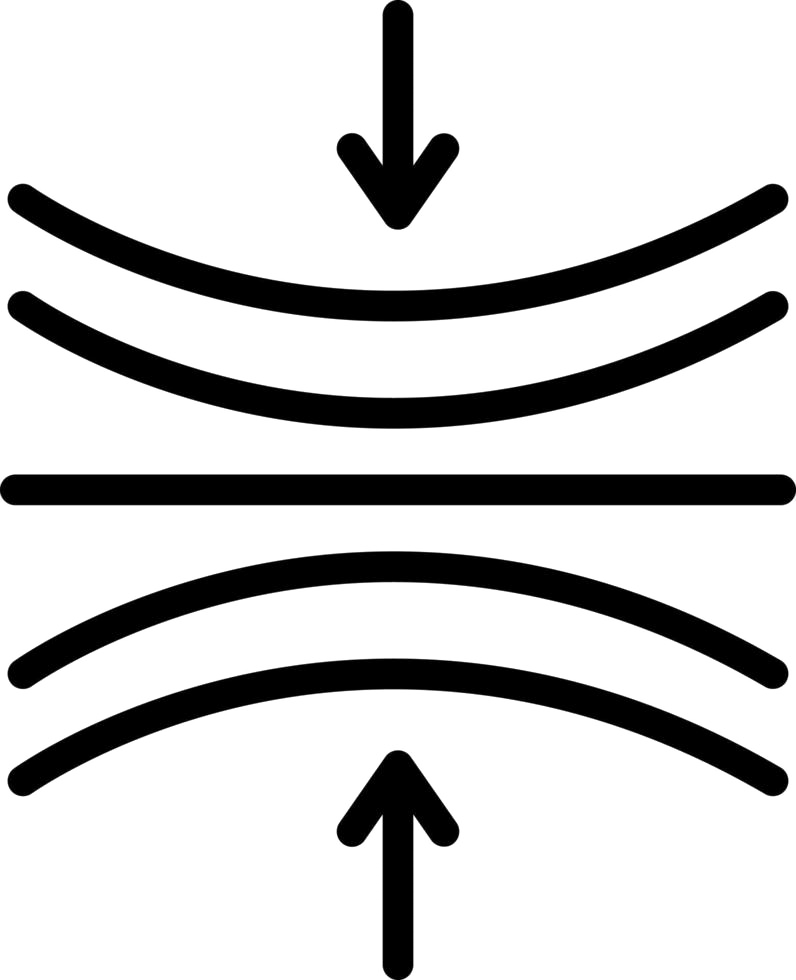
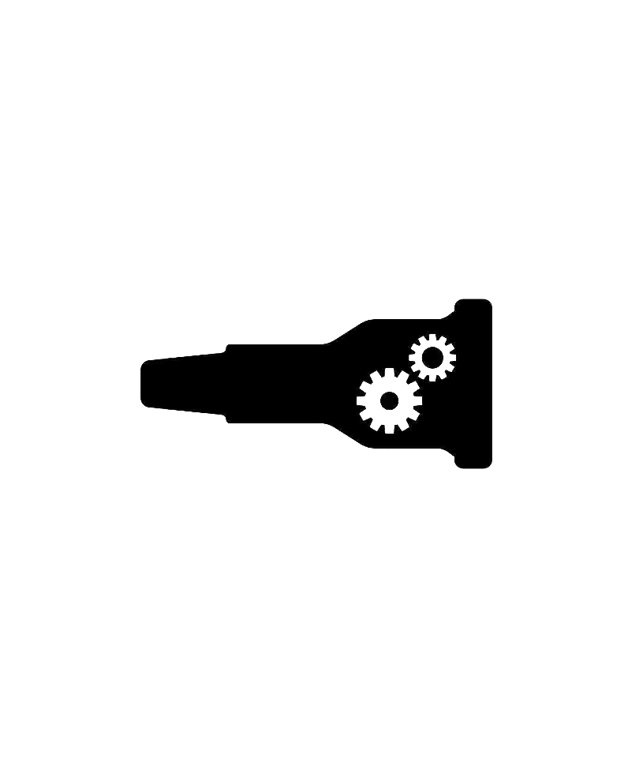

01
01
Cabeza de pistón
Diseñada para mejorar la eficiencia del conjunto neumático y favorecer una entrega de energía más estable.
Mayor eficiencia en cada disparo.O'Clock Airsoft · Preparación equilibrada
La preparación equilibrada para jugadores que buscan respuesta, consistencia y fiabilidad en una misma réplica.
Una configuración pensada para mejorar el comportamiento general de la réplica, manteniendo equilibrio entre eficiencia neumática, respuesta y estabilidad.
Bloque premium
La joya de la corona de O'Clock Airsoft
Una gama especial de réplicas preparadas bajo el criterio de O'Clock Airsoft, pensada para quienes buscan una configuración especialmente cuidada, equilibrada y lista para rendir.

Concepto del pack
El Pack Fusilero no busca destacar solo en un punto. Busca que respuesta, compresión, alimentación y estabilidad trabajen de forma coherente.
El rendimiento real nace del ajuste, no del catálogo.

Preparación técnica seria
Respuesta controlada, consistencia de disparo y fiabilidad interna planteadas como una misma preparación. No se trata de montar piezas sueltas, sino de ajustar el sistema completo.
Componentes y ajustes del pack
Seleccionamos componentes y ajustes que tengan sentido dentro del conjunto, no piezas aisladas por catálogo.
01
Diseñada para mejorar la eficiencia del conjunto neumático y favorecer una entrega de energía más estable.
Mayor eficiencia en cada disparo. 02
02
Pieza clave dentro del conjunto neumático. Su ajuste correcto ayuda a mejorar el sellado interno, estabilizar la salida de aire y trabajar en conjunto con el nozzle y la cabeza de pistón.
Mejor sellado y transferencia de aire más estable.
03Cilindro de una sola pieza diseñado para mejorar la estabilidad del conjunto neumático y reducir pérdidas innecesarias de aire. Su construcción monobloque favorece un comportamiento más sólido y coherente dentro del sistema.
Mayor estabilidad neumática y mejor aprovechamiento del volumen de aire.
04Aporta estabilidad al muelle durante el ciclo. Puede ser regulable o no según la configuración, pero es fundamental para mantener un movimiento más estable del conjunto.
Recorrido suave y controlado del pistón. 05
05
Selección entre SHS, RetroArms o FPS según la configuración. El conjunto puede recibir mecanizado y termofundido mediante inducción para mejorar su resistencia y adaptación al sistema.
Vida útil extendida y compatibilidad garantizada. 06
06
Selección entre SHS, Saigo CNC, Pandora o Titanium Series aligerados, según el objetivo de respuesta, fiabilidad y configuración interna de cada réplica.
Transmisión eficiente y respuesta ajustada al montaje.
07Sistema electrónico avanzado con micropulsador mediante clic para ofrecer máxima fiabilidad y control total del disparo, con recorrido ajustable.
Respuesta más limpia y control super preciso. Control total por Bluetooth desde tu smartphone. 08
08
Cada montaje se plantea con criterio técnico, comprobando compatibilidad, ajuste y funcionamiento del conjunto antes de darlo por terminado.
Menos montaje sin criterio, más ajuste real.Beneficios técnicos

01Una configuración correctamente equilibrada reduce pérdidas innecesarias y permite que la réplica transmita una sensación de disparo más inmediata y controlada.
Respuesta instantánea.La mejora del conjunto neumático y mecánico ayuda a reducir variaciones entre disparos, favoreciendo una trayectoria más repetible.
Agrupación a largas distancias.Un sellado correcto permite aprovechar mejor el aire disponible, reducir pérdidas de energía y estabilizar el comportamiento del sistema.
Más rendimiento con menos pérdida.La preparación no se basa en montar piezas sin criterio, sino en revisar compatibilidad, funcionamiento y ajuste real.
Ajuste técnico real.Criterio técnico
Cada réplica tiene tolerancias, desgaste y comportamiento propio. Por eso una preparación seria necesita revisar compresión, transmisión, alimentación y electrónica como partes de un mismo sistema.

Compresión
Transmisión Alimentación Electrónica Compatibilidad Prueba finalDecisión rápida
Si buscas una réplica equilibrada para jugar de forma versátil, lo importante es revisar la base antes de elegir piezas. Cuéntanos qué tienes y te orientamos sin montar por montar.
Respuesta controlada, consistencia y fiabilidad para una réplica de uso general.
Base, gearbox, compresión, alimentación y compatibilidad interna.
Las piezas se seleccionan según tu réplica, tu uso y el comportamiento que buscas.
Consulta técnica
Déjanos tu base, estilo de juego y comportamiento buscado. Revisaremos compatibilidad antes de recomendar una configuración.
Otras configuraciones disponibles
O'Clock Airsoft
Cuéntanos tu base, tu estilo de juego y qué comportamiento buscas. Te orientamos antes de montar piezas sin sentido.

 Prueba final
Prueba final